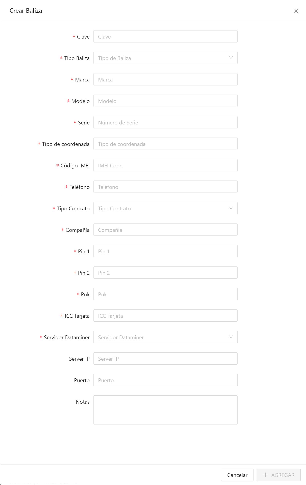
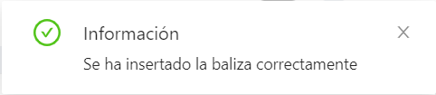
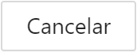

Agregar baliza
Para agregar una baliza:
- Despliegue el menú Configuración avanzada del menú principal.
- Clic en Alta de Balizas y se mostrará la pestaña por defecto Stock.
- En el área de trabajo, clic en la opción de la barra de herramientas. Se mostrará la siguiente ventana:

- Deberá rellenar el formulario donde:
- Clave: identificación de la baliza.
- Tipo de baliza: según el modo de funcionamiento puede ser GPS-GSM, GPS-GPRS, GPSDATOS, ARGOS, GPSARGOS, GPS-GPRS-IRIDIUM, GPS-IRIDIUM.
- Marca: marca de la baliza.
- Modelo: modelo de la baliza.
- Serie: número de serie.
- Tipo de coordenada: tipo de coordenada que facilita.
- IMEI: IMEI del modem de datos.
- Teléfono: número de abonado asociado a la SIM utilizada.
- Tipo contrato: tipo de contrato establecido con la operadora.
- Compañía: compañía operadora de las tarjetas.
- Pin 1: código de desbloqueo de la tarjeta SIM.
- Pin 2: segundo código de desbloqueo de la tarjeta SIM.
- Puk: código puk de desbloqueo de la tarjeta SIM.
- ICC Tarjeta: número ICC de la tarjeta SIM.
- Servidor Dataminer: Lista de servidores configurados en el sistema.
- Server IP: IP del servidor.
- Puerto: puerto por donde el IP configurado se comunica.
- Notas: información de interés específica del dispositivo.
- Una vez introducidos los datos se activa el botón y haciendo clic sobre este queda registrada la información en el sistema mostrándose la siguiente ventana:

siendo el estado de la baliza Sin inicializar. Puede deshacer la acción haciendo clic en el botón .
- En caso de error el sistema la mostrará una ventana indicando el tipo.